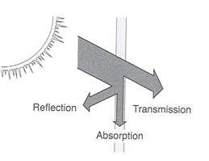

Model Reference
The light solver does not fundamentally need a model file. It needs a mapping from scene components to radiative behavior.
Concretely, a model description must answer these questions:
- given a scene node
(group, type), which radiative model applies? - how transparent is that component at first interception?
- how strongly does it scatter light in each waveband?
- is it a virtual sensor?
- does it emit light itself?
Historically this information often comes from YAML model files. In interactive workflows, the same semantics are built directly with GroupModel, TypeModel, InterceptionModel, and EmitterModel.
What Matters In A Model
Whatever the source format, the runtime ultimately wants a LightModels object that maps scene (group, type) pairs to model behavior.
The rest of this page is organized around those semantics rather than around the YAML syntax.
1. Group And Type Matching
Model matching is driven by the scene node (group, type) pair.
The runtime resolves a node with this precedence:
- exact group and exact type
- exact group and wildcard type
* - wildcard group
*and exact type - wildcard group
*and wildcard type*
This is true whether models come from files or from Julia objects.
Only nodes with geometry need a model. Non-geometric topology nodes such as plant, axis, phytomer, or grouping nodes are ignored by model validation.
For interactive workflows, the compact constructor is usually easiest:
models = models_for(
"coffee" => (
"Leaf" => translucent(par=0.15, nir=0.90),
"Stem" => translucent(par=0.20, nir=0.50),
),
"soil" => (
"ground" => translucent(par=0.10, nir=0.40),
),
)Use "*" as a type fallback:
models = models_for(
"coffee" => (
"*" => translucent(par=0.15, nir=0.90),
"Stem" => translucent(par=0.20, nir=0.50),
),
)2. File-Based Representation
Historically, one YAML file usually describes one functional group:
---
Group: coffee
Type:
Metamer:
Interception:
model: Translucent
transparency: 0.1
optical_properties:
PAR: 0.15
NIR: 0.9
Leaf:
Interception:
model: Translucent
transparency: 0.0
optical_properties:
PAR: 0.15
NIR: 0.9
...The correspondences are:
Group-> functional group nameType-> mapping from component types to model definitionsInterception-> first-order interception and scattering behaviorLightEmitter-> optional emitted radiance
3. Dynamically In Julia
The same model can be built directly in memory:
models = prepare_models([
GroupModel(
"coffee";
types=OrderedDict(
"Leaf" => TypeModel(
interception=InterceptionModel(
model="Translucent",
transparency=0.0,
optical_properties=OpticalProperties(0.15, 0.90),
),
),
"Metamer" => TypeModel(
interception=InterceptionModel(
model="Translucent",
transparency=0.1,
optical_properties=OpticalProperties(0.15, 0.90),
),
),
),
),
])This is the direct equivalent of the YAML file above.
The dynamic correspondences are:
Group: coffee->GroupModel("coffee"; ...)Type: Leaf: ...->"Leaf" => TypeModel(...)Interception: ...->InterceptionModel(...)LightEmitter: ...->EmitterModel(...)
4. Interception Behavior
The core light package mainly uses the Interception block.
model
The standard historical model is Translucent:
Interception:
model: Translucentand dynamically:
InterceptionModel(model="Translucent")This is the ordinary case for plant organs, soil, paving, and many geometric objects.
transparency
transparency is the transmitted fraction. It reduces the fraction intercepted by the visible surface in both the fast upper-hit path and the full per-pixel stack path.
For first-order-only interception, ArchimedLight follows the historical ARCHIMED upper-hit rule: only the first visible surface is retained for that pixel. It intercepts the fraction 1 - transparency; the transmitted fraction is not assigned to lower objects. This preserves the compact upper-hit pixel table instead of switching transparent scenes to a full-stack traversal.
File-based:
Interception:
transparency: 0.1Dynamic equivalent:
InterceptionModel(transparency=0.1)Typical values are in [0, 1]:
0.0for a fully intercepting component- larger values for partially transmitting components
optical_properties
optical_properties stores waveband-dependent scattering coefficients.
File-based:
Interception:
optical_properties:
PAR: 0.15
NIR: 0.90Dynamic equivalent:
InterceptionModel(
optical_properties=OpticalProperties(0.15, 0.90),
)For the current package:
PARandNIRare the built-in bands- extra shortwave bands are also supported
Example with one custom band in YAML:
optical_properties:
PAR: 0.15
NIR: 0.90
custom: 0.15The optical coefficient is the scattered fraction. When no more detailed information is available, absorptance is then derived approximately as:
absorptance = 1 - scattering_coefficient
5. Virtual Sensors
Virtual sensors receive light but remain transparent in the transfer logic. Their scattering coefficient is zero for every waveband, including custom bands.
File-based:
Interception:
model: VirtualSensoror
Interception:
sensor: trueDynamic equivalent:
InterceptionModel(model="VirtualSensor")or
InterceptionModel(sensor=true)Use this for diagnostic surfaces that should observe the radiative field without perturbing it like an opaque object.
6. Multiple Named Variants
Historical ARCHIMED files sometimes store several named parameter sets under one process block and select one with use.
File-based example:
Interception:
use: Translucent_1
Translucent_1:
model: Translucent
transparency: 0.0
optical_properties:
PAR: 0.15
NIR: 0.90
Translucent_2:
model: Translucent
transparency: 0.2
optical_properties:
PAR: 0.20
NIR: 0.85The dynamic equivalent is not usually written by hand, but the runtime preserves the same structure internally through the use and variants fields of InterceptionModel.
7. Light Emitters
Components can also emit light.
File-based:
LightEmitter:
model: LambertianEmitter
radiance: 20.0
gamma:
PAR: 0.48
NIR: 0.52Dynamic equivalent:
TypeModel(
light_emitter=EmitterModel(
model="LambertianEmitter",
radiance=20.0,
gamma=OpticalProperties(0.48, 0.52),
),
)This is useful for artificial lighting or diagnostic scenes. Most canopy workflows still rely mainly on meteo forcing. radiance is expressed per emitting surface area and steradian, and gamma values are independent spectral coefficients rather than fractions that are renormalized. Custom entries in gamma are transported under the same band name; they do not inherit or reuse the PAR coefficient. An emitter-only custom band is included in the result even when the meteo table has no matching RI_<band>_f column. For the source notation and how emitters enter the light algorithm, see Artificial Light Emitters.
8. Wildcard Models
Wildcards are often the most useful part of interactive model construction, because they let you start from a broad fallback and refine only the important cases.
Wildcard Type Inside One Group
File-based:
Group: coffee
Type:
"*":
Interception:
model: Translucent
transparency: 0.0
optical_properties:
PAR: 0.15
NIR: 0.90Dynamic equivalent:
GroupModel(
"coffee";
types=OrderedDict(
"*" => TypeModel(
interception=InterceptionModel(
model="Translucent",
transparency=0.0,
optical_properties=OpticalProperties(0.15, 0.90),
),
),
),
)This means: any type inside the coffee group uses this fallback unless a more specific type is declared.
Global Wildcard Group And Type
Dynamic equivalent:
models = prepare_models([
GroupModel(
"*";
types=OrderedDict(
"*" => TypeModel(
interception=InterceptionModel(
model="Translucent",
transparency=0.0,
optical_properties=OpticalProperties(0.15, 0.30),
),
),
),
),
])This is useful for:
- synthetic scenes
- tests
- progressive setup before writing exact
(group, type)rules
9. Soil And Paving
Soil and paving are not special cases from the model point of view. They are ordinary functional groups:
Group: pavement
Type:
Cobblestone:
Interception:
model: Translucent
transparency: 0
optical_properties:
PAR: 0.15
NIR: 0.9
plot_paving: 80Dynamic equivalent:
GroupModel(
"pavement";
types=OrderedDict(
"Cobblestone" => TypeModel(
interception=InterceptionModel(
model="Translucent",
transparency=0.0,
optical_properties=OpticalProperties(0.15, 0.90),
),
),
),
)The plot_paving hint belongs to the file-based convenience layer used by read_simulation; the radiative behavior itself is still just an ordinary interception model.
10. Missing Bands And Fallbacks
When a model omits a waveband in optical_properties, the runtime falls back to the corresponding option in LightOptions:
- missing PAR ->
options.scattering_coeff_par - missing NIR ->
options.scattering_coeff_nir
That is why the global scattering coefficients still matter even when most groups are explicitly parameterized.
11. Historical Blocks Not Used By The Light Package
Historical model files may still contain:
PhotosynthesisStomatalConductance- many energy-balance parameters
Those sections remain useful archival context, but they are not part of the active light API of ArchimedLight.jl. For light simulations, the important parts are the group/type mapping, interception behavior, optional emitters, and wildcard rules.